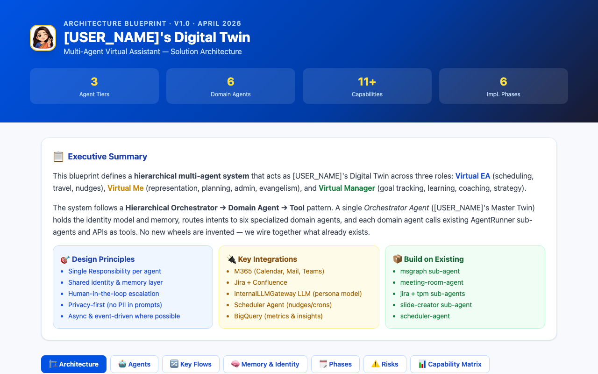

⭐ FLAGSHIP
124 KB
Digital Twin Blueprint
Three-tier digital-twin agent architecture: 6 domain agents, 11+ capabilities, memory & identity model, 6-phase rollout with trust-calibration gates, and the "twin earns autonomy" framing.
View blueprint